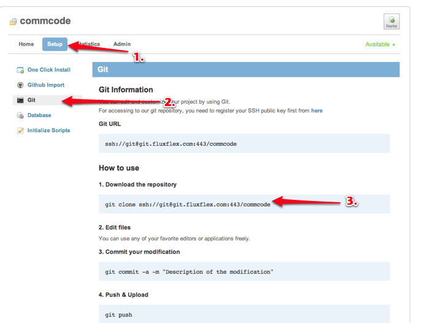
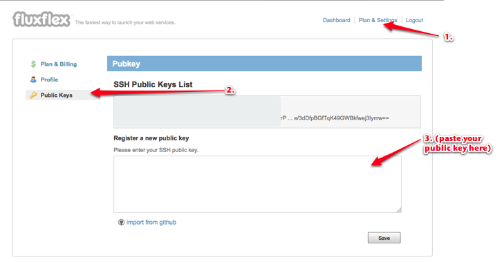
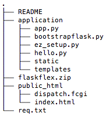

Part 3 - Deploying your Application¶
Initial Deployment involves a few more steps than day to day updates, just remember that the items noted as setup steps are almost never repeated. Those items noted as initial steps are done once for each new project.
Once a project is initialized, the commands that you will use most regularly are as summarized below:
When you modify source code:
git commit -a
git push
When you add a file:
git add filename
git commit
git push
When you delete a file:
git rm filename
git commit
git push
Sign up with Fluxflex and create a new project [setup step]¶
- Register an account with http://fluxflex.com, log in and “create a new project”.

You can check out your new project by name using git. For example if your project is called yourprojectname:
To confirm the proper procedure, go to “Setup” > “Git” and copy the code for downloading your project.
Registering a Public SSH Key [setup step]¶
Note
SSH Public Key based Authentication in a nutshell SSH Key based Authentication is an alternative to password based authentication. The methodology depends on the ssh protocol and public keys. A provider, such as Fluxflex.com, stores a list of Authorized Public Keys provided by an authorized user. When a user attempts to connect to the server a Challenge is sent by the server using an appropriate Public Key. Only a machine configured with the correct Private Key can send a suitable response. If a suitable Key Response is made authorization is allowed. Authorization is denied if there is no suitable response.
When we register a public key in our fluxflex account, we are telling fluxflex that a machine with the corresponding private key should be allowed to update code on our fluxflex projects.
Note
Using Windows? you may find TortoiseGit to be useful. Watch this video demonstrating the configuration of tortoisegit to work with a proxy
In this step we prepare our machine for ssh key based authentication by generating a public key and private key, this is done once per machine. If you already have a public and private key you should probably use those. If you haven’t done it before, or if you want to create a new key, use ssh-keygen to generate a public key.
ssh-keygen
Accept all the defaults (there is no need to add a passphrase, however it does add one more layer of security).
Note
If you are on Windows, follow the information here: http://doc.fluxflex.com/pubkey
To view and copy your public key use the cat command to dump the contents of the public key to the terminal:
cat ~/.ssh/id_rsa.pub
Then paste the resulting output to your fluxflex key list by going to “Plan & Settings” > “Public Keys” > “SSH Public Keys List” and click “Save”.
Preparing the directory for publishing to fluxflex [initial step]¶
The flaskflex.py tool is a quick way to prepare a brand new fluxflex project for deployment as a flask application to fluxflex.
1. Use git to download yourproject by name (eg. if it is called yourprojectname it may look like this
git clone ssh://git@git.fluxflex.com:443/yourprojectname
The result will be a directory structure something like this:
- You will need to activate the virtual environment that you’ve been using for your application.
Note
flaskflex.py generates a req.txt file which is based on your virtual environment so it is important that you activate your virtual environment!

Download flaskflex.py to your fluxflex project directory and run flaskflex.py. flaskflex.py prepares your project for deployment to fluxflex:
cd yourprojectname wget http://dl.dropbox.com/u/1004432/flaskflex.py python flaskflex.py
Note
flaskflex.py adds the directory structure and files needed to deploy your application to fluxflex. These files provide the configuration needed for a WSGI based application to pass instructions via FCGI to a webserver. You should now see the following files added to your project:
.flx
public_html
├── .htaccess
└── dispatch.fcgi
req.txt
Add your application to the fluxflex project [initial step]¶
flaskflex.py follows the following conventions:
- It expects your application to exist in a folder called application and to be called app.py (look at the public_html/dispatch.fcgi file for this information).
- It expects all the requirements for your application to be listed in req.txt
The steps for deployment are as follows:
- Copy your flask application to the fluxflex project folder, such that your application’s folder will be called application.
- If necessary rename the contained application to app.py.
If your fluxflex project folder is called yourprojectname and your flask application is called yourflaskapplication, you might move yourflaskapplication to application, something like the example below:
cp -r yourflaskapplication yourprojectname/application
If the .py file in yourflaskapplication was named myapp.py, then you might do something like the example below:
cd yourprojectname/application
mv myapp.py app.py
Use git to update and publish your application [initial step]¶
git add .
git commit -a -m 'initial deployment'
git push
Visit your application to see it working¶
Allow 1 to 2 minutes for the application to be available online. You should be able to visit your new application at yourapplicationname.fluxflex.com.
The Update and Deploy cycle¶
New deployments are basically done after changes have been committed and a git push is initiated.
Discussion¶
- A brute force attack uses repeated attempts with a dictionary of passwords until one is correct, how would public key based authentication protect against brute force attacks?
- Why use git to deploy your code? Why not FTP?
- An .htaccess file passes instructions to an apache (or similar) webserver. If it exists, it is consulted by the webserver to determine how that server sould behave. Look at the contents of the .htaccess file, give your best guess as to what each line is doing.
- The dispatch.fcgi file acts as bridge between our WSGI based flask app and the webserver. What is WSGI? What is FCGI?
- The req.txt file was generated when you ran flaskflex.py. What is in the req.txt file? Why was it important that your virtual enviroment be activated? HINT: you may need to remind yourself about the purpose of a Python virtualenv.
- For “bonus points”, there are two more files involved in the deployment, the .flx file and the req.txt file. They can be considered to be configuration files. Take a look at them and discuss how they contribute to configuration off the application on the server. HINT: there is documentation at fluxflex.com that explains the .flx file.
- For “bonus, bonus points”, try to draw a diagram that summarizes ALL the “pieces” of the deployment.